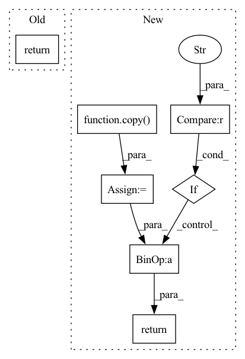

Pattern ID :38375
Before Change
diff_2[axis] = diff_2[axis] - 1
else:
print("Wrong mode")
return [diff_3, diff_2, diff_1]
def second_order_scheme_build(axes, varn, axes_mode):After Change
diff_1 = copy(diff)
diff_2 = copy(diff)
diff_3 = copy(diff)
diff_4 = copy( diff)
if mode == "f":
diff_3[axis] = diff_3[axis] + 2
diff_2[axis] = diff_2[axis] + 1
elif mode == "b":
diff_3[axis] = diff_3[axis] - 2
diff_2[axis] = diff_2[axis] - 1
elif mode=="central" :
diff_4[axis] = diff_4[axis] + 2
diff_3[axis] = diff_3[axis] + 1
diff_2[axis] = diff_2[axis] - 1
diff_1[axis] = diff_1[axis] - 2
return [diff_4,diff_3, diff_2, diff_1]
def second_order_scheme_build(axes, varn, axes_mode):In pattern: SUPERPATTERN
Frequency: 3
Non-data size: 7
Instances Fragment ID: 109688797
Project Name: itmo-nss-team/torch_de_solver
Commit Name: 4b3ab52d5a4060ded9226df452b61282924d1c2d
Time: 2022-01-21
Author: heretik.unlimited@gmail.com
File Name: finite_diffs.py
M Class Name: AnonimousClass
N Class Name: AnonimousClass
M Method Name: second_order_shift(3)
N Method Name: second_order_shift(3)
M Parent Class:
N Parent Class:
M File Name: finite_diffs.py
N File Name: finite_diffs.py
M Start Line: 263
M End Line: 274
N Start Line: 263
N End Line: 278
Before Change
diff_2[axis] = diff_2[axis] - 1
else:
print("Wrong mode")
return [diff_3, diff_2, diff_1]
def second_order_scheme_build(axes, varn, axes_mode):After Change
diff_1 = copy(diff)
diff_2 = copy(diff)
diff_3 = copy(diff)
diff_4 = copy( diff)
if mode == "f":
diff_3[axis] = diff_3[axis] + 2
diff_2[axis] = diff_2[axis] + 1
elif mode == "b":
diff_3[axis] = diff_3[axis] - 2
diff_2[axis] = diff_2[axis] - 1
elif mode=="central" :
diff_4[axis] = diff_4[axis] + 2
diff_3[axis] = diff_3[axis] + 1
diff_2[axis] = diff_2[axis] - 1
diff_1[axis] = diff_1[axis] - 2
return [diff_4,diff_3, diff_2, diff_1]
def second_order_scheme_build(axes, varn, axes_mode): Fragment ID: 109688798
Project Name: itmo-nss-team/torch_de_solver
Commit Name: b768cebdd65d28dd933a9c668076107a57aa6a87
Time: 2022-01-25
Author: heretik.unlimited@gmail.com
File Name: finite_diffs.py
M Class Name: AnonimousClass
N Class Name: AnonimousClass
M Method Name: second_order_shift(3)
N Method Name: second_order_shift(3)
M Parent Class:
N Parent Class:
M File Name: finite_diffs.py
N File Name: finite_diffs.py
M Start Line: 263
M End Line: 274
N Start Line: 263
N End Line: 278
Before Change
@staticmethod
def _categories_orig_to_categories(categories: Dict[str,str]):
categories = copy(categories)
return {int(key)-1: categories[key] for key in categories}
def _map_category_names(self, token_results: List[TokenClassResult]) -> List[TokenClassResult]:
for result in token_results:After Change
@staticmethod
def _categories_orig_to_categories(categories_semantics: List[str], categories_bio: List[str]):
categories_semantics = copy(categories_semantics)
categories_bio = copy( categories_bio)
categories_list = [x+ "-"+ y for x in categories_bio for y in categories_semantics if y!="OTHER" ]
categories_list = [x for x in categories_list if not x.startswith("O")]
categories_list.insert(9,"O")
return {idx: cat_name for idx, cat_name in enumerate(categories_list)}
def _map_category_names(self, token_results: List[TokenClassResult]) -> List[TokenClassResult]:
for result in token_results: Fragment ID: 109688788
Project Name: deepdoctection/deepdoctection
Commit Name: 3d4724cc9e6820b673c2dd4a93550adf38299aa3
Time: 2022-01-02
Author: jm@drjanismeyer.de
File Name: deep_doctection/extern/hflayoutlm.py
M Class Name: HFLayoutLmTokenClassifier
N Class Name: HFLayoutLmTokenClassifier
M Method Name: _categories_orig_to_categories(2)
N Method Name: _categories_orig_to_categories(1)
M Parent Class: LMTokenClassifier
N Parent Class: TokenClassifier
M File Name: deep_doctection/extern/hflayoutlm.py
N File Name: deep_doctection/extern/hflayoutlm.py
M Start Line: 89
M End Line: 91
N Start Line: 86
N End Line: 92